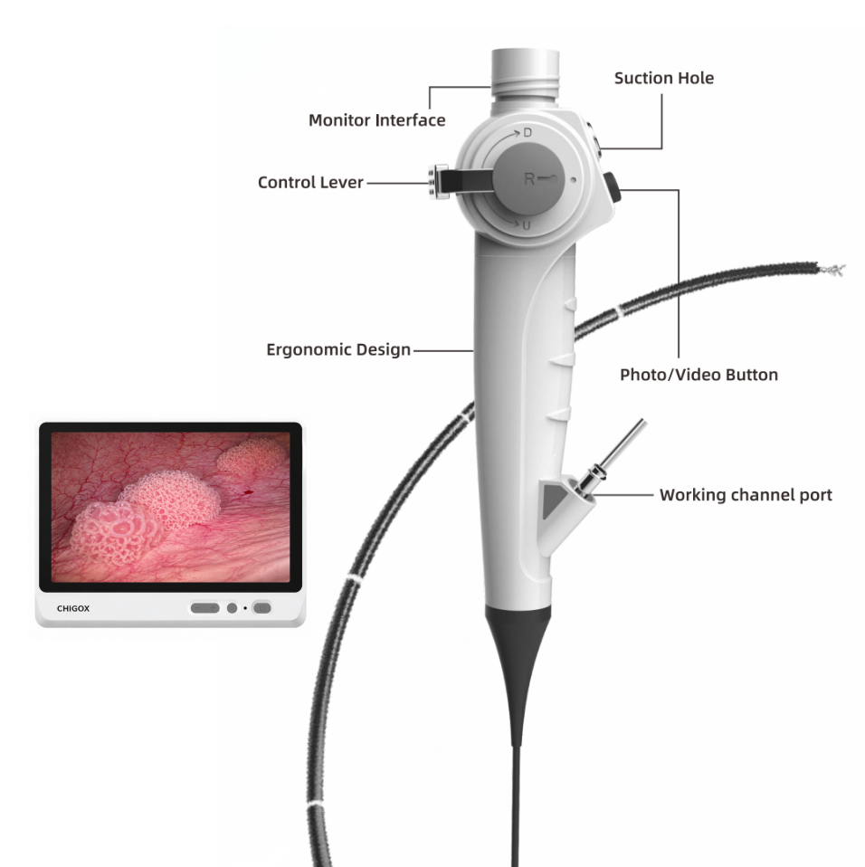

Medical Flexible Endoscope
CGC-350R Series Reusable Flexible Cystoscope
A reusable HD flexible cystoscope for diagnostic and therapeutic procedures of the bladder and lower urinary tract.

Product Images
Product Overview
The CGC-350R Series Reusable Flexible Cystoscope is designed for high-performance diagnostic and therapeutic procedures of the bladder and lower urinary tract.
With HD digital imaging, excellent flexibility and a durable reusable construction, the system provides outstanding image quality, precise navigation and long service life for routine clinical practice.
Compatible with HD endoscopy processors, the CGC-350R Series is an ideal solution for hospitals, urology departments and minimally invasive surgery centers.
Key Features
- High-definition CMOS digital imaging
- Reusable medical-grade insertion tube
- Superior image quality and color reproduction
- Large bidirectional tip deflection
- Excellent irrigation performance
- Ergonomic lightweight control handle
- Smooth insertion and precise maneuverability
- Compatible with HD endoscopy systems
- Designed for repeated sterilization
- Reliable long-term clinical performance
Applications
- Diagnostic cystoscopy
- Bladder disease examination
- Urethral examination
- Bladder biopsy
- Foreign body inspection
- Follow-up evaluation after urological surgery
- Routine urological procedures
Technical Specifications
| CHIGOX Model | Outer Diameter | Working Channel | Working Length | Field of View | Depth of Field | Tip Deflection | Image Resolution |
|---|---|---|---|---|---|---|---|
| CGC-350R48 | 4.8 mm | 2.2 mm | 380 mm | 120° | 3–100 mm | Up210° / Down120° | HD Digital Imaging |
| CGC-350R52 | 5.2 mm | 2.6 mm | 380 mm | 120° | 3–100 mm | Up210° / Down120° | HD Digital Imaging |
| CGC-350R58 | 5.8 mm | 3.0 mm | 380 mm | 120° | 3–100 mm | Up210° / Down120° | HD Digital Imaging |
Standard Configuration
- Reusable Flexible Cystoscope
- Waterproof Cap
- Leak Tester
- Cleaning Brush
- Sterilization Cap
- User Manual
Optional Accessories
- HD Endoscopy Processor
- Medical Monitor
- Endoscopy Workstation
- Medical Trolley
- Biopsy Forceps
- Irrigation Pump
- Image Recording System
- Sterilization Tray
Inquiry Form
Share your market, application, and target configuration. The CHIGOX team will follow up by email.